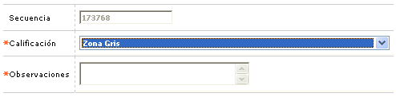

Solicitudes por etapa - Verificación referencias |
Ingresar calificación: De acuerdo a las Calificaciones de los Parámetros de solicitudes por producto, esta opción permite que la solicitud avance a la siguiente etapa. El sistema valida que la solicitud seleccionada tenga verificadas todas las referencias del cliente.
El formulario muestra los siguientes campos, y adicionalmente con un botón que permite regresar al formulario anterior.

Secuencia |
Campo de salida que muestra el número de la solicitud actual. |
Calificación |
Este campo contiene un combo con las calificaciones existentes que se encuentran parametrizadas para el producto de la solicitud, en la opción Calificación verificación referencias de los Parámetros de solicitudes por producto. |
Observaciones |
Este campo acepte caracteres alfanuméricos de 2000 posiciones. Puede ser obligatorio o no, de acuerdo a lo parametrizado para el producto de la solicitud, en la opción Calificación verificación referencias de los Parámetros de solicitudes por producto. |